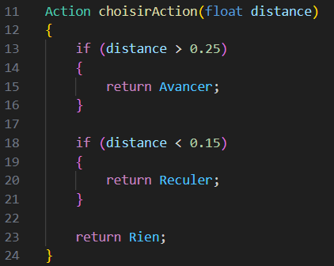

<!DOCTYPE html>
<html lang="en">
  <head>
    <meta charset="utf-8" />
    <meta name="viewport" content="width=device-width, initial-scale=1.0, maximum-scale=1.0, user-scalable=no" />

    <title></title>
    <link rel="stylesheet" href="dist/reveal.css" />
    <link rel="stylesheet" href="dist/theme/white.css" id="theme" />
    <link rel="stylesheet" href="css/vs2015.css" />
	<link rel="stylesheet" href="css/layout.css" />
	<link rel="stylesheet" href="plugin/customcontrols/style.css">
	<link rel="stylesheet" href="plugin/chalkboard/style.css">


    <script defer src="dist/fontawesome/all.min.js"></script>

	<script type="text/javascript">
		var forgetPop = true;
		function onPopState(event) {
			if(forgetPop){
				forgetPop = false;
			} else {
				parent.postMessage(event.target.location.href, "app://obsidian.md");
			}
        }
		window.onpopstate = onPopState;
		window.onmessage = event => {
			if(event.data == "reload"){
				window.document.location.reload();
			}
			forgetPop = true;
		}

		function fitElements(){
			const itemsToFit = document.getElementsByClassName('fitText');
			for (const item in itemsToFit) {
				if (Object.hasOwnProperty.call(itemsToFit, item)) {
					var element = itemsToFit[item];
					fitElement(element,1, 1000);
					element.classList.remove('fitText');
				}
			}
		}

		function fitElement(element, start, end){

			let size = (end + start) / 2;
			element.style.fontSize = `${size}px`;

			if(Math.abs(start - end) < 1){
				while(element.scrollHeight > element.offsetHeight){
					size--;
					element.style.fontSize = `${size}px`;
				}
				return;
			}

			if(element.scrollHeight > element.offsetHeight){
				fitElement(element, start, size);
			} else {
				fitElement(element, size, end);
			}		
		}


		document.onreadystatechange = () => {
			fitElements();
			if (document.readyState === 'complete') {
				if (window.location.href.indexOf("?export") != -1){
					parent.postMessage(event.target.location.href, "app://obsidian.md");
				}
				if (window.location.href.indexOf("print-pdf") != -1){
					let stateCheck = setInterval(() => {
						clearInterval(stateCheck);
						window.print();
					}, 250);
				}
			}
	};

var programme9 = `#include <iostream>
using namespace std;

double approximationPi(int nbrIterations = 5)
{
    double approximation = 0;

    for (int i = 0; i < nbrIterations; i++)
    {
        if (i % 2 == 0)
        {
            approximation += 1.0 / double(2 * i + 1);
        }
        
        else
        {
            approximation -= 1.0 / double(2 * i + 1);
        }
    }

    return 4 * approximation;
}

int main()
{
    cout << "Approximation de base : " << approximationPi() << endl;
    cout << "Approximation plus précise : " << approximationPi(10);

    return 0;
}

`;

	var programme8 = `float moyenne(float tableau[10])
{
    float somme = 0;
    float * copieTableau = new float[10];

    for (int i = 0; i < 10; i++)
    {
        copieTableau[i] = tableau[i];
        
        somme += tableau[i];
    }

    float minimum;
    int positionMinimum;

    for (int i = 0; i < 10; i++)
    {
        positionMinimum = 0;
        minimum = copieTableau[0];

        for (int j = 0; j < 10 - i; j++)
        {
            if (minimum > copieTableau[j])
            {
                minimum = copieTableau[j];
                positionMinimum = j;
            }
        }

        tableau[i] = minimum;
        copieTableau = supprimerElementTableau(copieTableau, 10 - i, positionMinimum);
    }

    return somme / 10.0;
}`;

	var programme7 = `float * supprimerElementTableau(float * tableau, int taille, int position)
{
    float * nouveauTableau = new float[taille - 1];

    for (int i = 0; i < position; i++)
    {
        nouveauTableau[i] = tableau[i];
    }
    
    for (int i = position; i < taille - 1; i++)
    {
        nouveauTableau[i] = tableau[i + 1];
    }

    return nouveauTableau;
}`;

	var programme6 = `#include <iostream>
#include <cmath>
using namespace std;

float moyenne(float mesures[5])
{
    float somme = 0;

    for (int i = 0 ; i < 5; i++)
    {
        somme += mesures[i];
    }

    return somme / 5.0;
}

float ecartType(float mesures[5])
{
    float mu = moyenne(mesures);

    float variance = 0;

    for (int i = 0 ; i < 5; i++)
    {
        variance += (mesures[i] - mu) * (mesures[i] - mu);
    }

    variance /= 5.0;

    return sqrt(variance);
}

void correcteur(float * ptrMesure, float mesuresPrecedentes[5])
{
    float sigma = ecartType(mesuresPrecedentes);
    float mu = moyenne(mesuresPrecedentes);

    if (*ptrMesure > mu + 3 * sigma || *ptrMesure < mu - 3 * sigma)
    {
        *ptrMesure = mesuresPrecedentes[4];
    }
}

int main()
{
    float mesures[5] = {0.9, 1.03, 0.99, 1.05, 1.08};
    float nouvelleMesure = 2;

    correcteur(&nouvelleMesure, mesures);

    cout << "Mesure après correction : " << nouvelleMesure;

    return 0;
}
`;

	var programme4 = `Action choisirAction(float distance)
{
    if (distance > 0.25)
    {
        return Avancer;
    }

    if (distance < 0.15)
    {
        return Reculer;
    }

    return Rien;
}`;

var programme4bis = `#include <iostream>
using namespace std;

enum Action
{
    Avancer,
    Reculer,
    Rien
};

Action choisirAction(float distance)
{
    if (distance > 0.25)
    {
        return Avancer;
    }

    if (distance < 0.15)
    {
        return Reculer;
    }

    return Rien;
}

int main()
{
    float distance = -1;

    while (distance < 0)
    {
        cout << "Distance au mur : ";
        cin >> distance;
    }

    switch (choisirAction(distance))
    {
    case Avancer:
        cout << "Le robot avance";
        break;
    
    case Reculer:
        cout << "Le robot recule";
        break;

    case Rien:
        cout << "Le robot ne fait rien";
        break;

    default:
        break;
    }

    return 0;
}`;

var programme2 = `#include <iostream>
using namespace std;

float max(float a, float b)
{
    if (a > b)
    {
        return a;
    }

    return b;
}

int main()
{
    float a, b;

    cout << "Valeur de a : ";
    cin >> a;
    cout << "Valeur de b : ";
    cin >> b;

    cout << "Le maximum des deux nombres est : " << max(a, b);

    return 0;
}`;

var programme1 = `#include <iostream>
using namespace std;

float moyenne(float tableau[5])
{
    float somme = 0;

    for (int i = 0; i < 5; i++)
    {
        somme += tableau[i];
    }

    return somme / 5.0;
}

int main()
{
    float tableau[5] = {1.1, 0.9, 1.05, 0.93, 1.11};

    cout << "Moyenne du tableau : " << moyenne(tableau);

    return 0;
}`;

var programme5 = `enum TypeErreur
{
    DivisionParZero,
    PointeurNonAlloue,
    TableauVide
};

void erreur(TypeErreur typeErreur)
{
    switch (typeErreur)
    {
    case DivisionParZero:
        cout << "Attention ! Il y a une division par 0 !";
        break;
    
    case PointeurNonAlloue:
        cout << "Attention ! Il y a un pointeur non alloué !";
        break;

    case TableauVide:
        cout << "Attention ! Il y a un tableau vide !";
        break;

    default:
        break;
    }
}`;

        </script>
  </head>
  <body>
    <div class="reveal">
      <div class="slides"><section  data-markdown><script type="text/template"><!-- .slide: class="drop" -->
<div class="" style="position: absolute; left: 0px; top: 0px; height: 700px; width: 960px; min-height: 700px; display: flex; flex-direction: column; align-items: center; justify-content: center" absolute="true">

<style> .reveal {  font-size: 180%; line-height: 170%; } .reveal p {font-size:80%;} .reveal code {font-size:120%}</style>
# Séance 4
## Fonctions
</div></script></section><section  data-markdown><script type="text/template"><!-- .slide: class="drop" -->
<div class="" style="position: absolute; left: 0px; top: 0px; height: 700px; width: 960px; min-height: 700px; display: flex; flex-direction: column; align-items: center; justify-content: center" absolute="true">

## La dernière fois...

- &shy;<!-- .element: class="fragment" data-fragment-index="1" --> Les tableaux
- &shy;<!-- .element: class="fragment" data-fragment-index="3" --> Les vecteurs
- &shy;<!-- .element: class="fragment" data-fragment-index="4" --> Les pointeurs

</div></script></section><section  data-markdown><script type="text/template"><!-- .slide: class="drop" -->
<div class="" style="position: absolute; left: 0px; top: 0px; height: 700px; width: 960px; min-height: 700px; display: flex; flex-direction: column; align-items: center; justify-content: center" absolute="true">

# Les fonctions à valeur de retour

</div></script></section><section  data-markdown><script type="text/template"><!-- .slide: class="drop" -->
<div class="" style="position: absolute; left: 0px; top: 0px; height: 700px; width: 960px; min-height: 700px; display: flex; flex-direction: column; align-items: center; justify-content: center" absolute="true">

## Les fonctions à valeur de retour
- &shy;<!-- .element: class="fragment" data-fragment-index="1" --> Ensemble d'instructions souvent utilisées dans le code
	- &shy;<!-- .element: class="fragment" data-fragment-index="2" --> Pouvoir exécuter toutes ces instructions en une seule ligne


</div></script></section><section  data-markdown><script type="text/template"><!-- .slide: class="drop" -->
<div class="" style="position: absolute; left: 0px; top: 0px; height: 700px; width: 960px; min-height: 700px; display: flex; flex-direction: column; align-items: center; justify-content: center" absolute="true">

## Exemple d'utilisation : faire la moyenne des 5 dernières données d'un capteur
S'il y a `N` capteurs sur le robot, il faut faire la moyenne `N` fois. Cela représente environ `5N` lignes de code. Avec une fonction, on tombe à environ `N + 9` lignes et moins de variables à gérer.


</div></script></section><section  data-markdown><script type="text/template"><!-- .slide: class="drop" -->
<div class="" style="position: absolute; left: 0px; top: 0px; height: 700px; width: 960px; min-height: 700px; display: flex; flex-direction: column; align-items: center; justify-content: center" absolute="true">

## Créer une fonction
- Savoir ce que la fonction renvoie (type de retour, qui peut être un pointeur !)
- Savoir ce dont elle à besoin pour effectuer ses instructions (paramètres / arguments)
- Savoir ce qu'elle fait

</div></script></section><section  data-markdown><script type="text/template"><!-- .slide: class="drop" -->
<div class="" style="position: absolute; left: 0px; top: 0px; height: 700px; width: 960px; min-height: 700px; display: flex; flex-direction: column; align-items: center; justify-content: center" absolute="true">

## Exemple : faire la moyenne d'un tableau à 5 éléments


- &shy;<!-- .element: class="fragment" data-fragment-index="1" -->La fonction se place avant la fonction `main()`
- &shy;<!-- .element: class="fragment" data-fragment-index="2" -->`float` est le type de retour
	- &shy;<!-- .element: class="fragment" data-fragment-index="3" -->Instruction `return` pour renvoyer une valeur
- &shy;<!-- .element: class="fragment" data-fragment-index="4" --> Paramètres entre les parenthèses

</div></script></section><section  data-markdown><script type="text/template"><!-- .slide: class="drop" -->
<div class="" style="position: absolute; left: 0px; top: 0px; height: 700px; width: 960px; min-height: 700px; display: flex; flex-direction: column; align-items: center; justify-content: center" absolute="true">

## Attention


- `tableau` dans `main()` et `tableau` dans `moyenne()` sont des variables différentes car elles sont dans des blocs différents
- Pour un tableau à taille inconnue ou non fixe, il faut passer la taille et le tableau (comme pointeur)

</div></script></section><section  data-markdown><script type="text/template"><!-- .slide: class="drop" -->
<div class="" style="position: absolute; left: 0px; top: 0px; height: 700px; width: 960px; min-height: 700px; display: flex; flex-direction: column; align-items: center; justify-content: center" absolute="true">

## Exemple : obtenir le maximum de deux nombres


- &shy;<!-- .element: class="fragment" data-fragment-index="1" --> On sépare les arguments par une virgule
	- &shy;<!-- .element: class="fragment" data-fragment-index="2" --> Ne pas oublier de préciser le type et le nom de chaque argument !
- &shy;<!-- .element: class="fragment" data-fragment-index="3" --> Le bloc `else` n'est pas nécessaire car la première instruction `return` met fin à l'exécution de `max()` si `a>b`

</div></script></section><section  data-markdown><script type="text/template"><!-- .slide: class="drop" -->
<div class="" style="position: absolute; left: 0px; top: 0px; height: 700px; width: 960px; min-height: 700px; display: flex; flex-direction: column; align-items: center; justify-content: center" absolute="true">

## Exercice : compléter le programme suivant


Ajouter une fonction qui détermine l'action à effectuer en fonction de la distance au mur :
- `distance > 0.25` : avancer
- `distance < 0.15` : reculer
- ` 0.15 <= distance <= 0.25` : ne rien faire

</div></script></section><section  data-markdown><script type="text/template"><!-- .slide: class="drop" -->
<div class="" style="position: absolute; left: 0px; top: 0px; height: 700px; width: 960px; min-height: 700px; display: flex; flex-direction: column; align-items: center; justify-content: center" absolute="true">

## Réponse



</div></script></section><section  data-markdown><script type="text/template"><!-- .slide: class="drop" -->
<div class="" style="position: absolute; left: 0px; top: 0px; height: 700px; width: 960px; min-height: 700px; display: flex; flex-direction: column; align-items: center; justify-content: center" absolute="true">

# Les fonctions `void`

</div></script></section><section  data-markdown><script type="text/template"><!-- .slide: class="drop" -->
<div class="" style="position: absolute; left: 0px; top: 0px; height: 700px; width: 960px; min-height: 700px; display: flex; flex-direction: column; align-items: center; justify-content: center" absolute="true">

## Les fonctions `void`

- Fonction ne renvoyant rien
	- L'instruction `return` n'est pas nécessaire

</div></script></section><section  data-markdown><script type="text/template"><!-- .slide: class="drop" -->
<div class="" style="position: absolute; left: 0px; top: 0px; height: 700px; width: 960px; min-height: 700px; display: flex; flex-direction: column; align-items: center; justify-content: center" absolute="true">

## Exemple d'utilisation : afficher un message d'erreur


</div></script></section><section  data-markdown><script type="text/template"><!-- .slide: class="drop" -->
<div class="" style="position: absolute; left: 0px; top: 0px; height: 700px; width: 960px; min-height: 700px; display: flex; flex-direction: column; align-items: center; justify-content: center" absolute="true">

## Exemple : pointeurs et fonctions


</div></script></section><section  data-markdown><script type="text/template"><!-- .slide: class="drop" -->
<div class="" style="position: absolute; left: 0px; top: 0px; height: 700px; width: 960px; min-height: 700px; display: flex; flex-direction: column; align-items: center; justify-content: center" absolute="true">

## Exemple : pointeurs et fonctions


Le programme « corrige » une mesure abherrante sans renvoyer de valeur

</div></script></section><section  data-markdown><script type="text/template"><!-- .slide: class="drop" -->
<div class="" style="position: absolute; left: 0px; top: 0px; height: 700px; width: 960px; min-height: 700px; display: flex; flex-direction: column; align-items: center; justify-content: center" absolute="true">

## Exercice : écrire une fonction renvoyant la moyenne d'un tableau à 10 éléments et le triant par ordre croissant au passage

</div></script></section><section  data-markdown><script type="text/template"><!-- .slide: class="drop" -->
<div class="" style="position: absolute; left: 0px; top: 0px; height: 700px; width: 960px; min-height: 700px; display: flex; flex-direction: column; align-items: center; justify-content: center" absolute="true">

## Indice (1/2)

Il peut être utile d'écire une fonction qui supprime un élément spécifique d'un tableau (donc qui renvoie un tableau de taille plus petite)

</div></script></section><section  data-markdown><script type="text/template"><!-- .slide: class="drop" -->
<div class="" style="position: absolute; left: 0px; top: 0px; height: 700px; width: 960px; min-height: 700px; display: flex; flex-direction: column; align-items: center; justify-content: center" absolute="true">

## Indice (2/2)

Voici ladite fonction


</div></script></section><section  data-markdown><script type="text/template"><!-- .slide: class="drop" -->
<div class="" style="position: absolute; left: 0px; top: 0px; height: 700px; width: 960px; min-height: 700px; display: flex; flex-direction: column; align-items: center; justify-content: center" absolute="true">

## Solution


</div></script></section><section  data-markdown><script type="text/template"><!-- .slide: class="drop" -->
<div class="" style="position: absolute; left: 0px; top: 0px; height: 700px; width: 960px; min-height: 700px; display: flex; flex-direction: column; align-items: center; justify-content: center" absolute="true">

## Paramètres par défaut

- Paramètre non-obligatoire
	- Une valeur par défaut est donnée
- Se place à la fin des paramètres
- Utilisé surtout pour moduler la précision de calculs / d'actions

</div></script></section><section  data-markdown><script type="text/template"><!-- .slide: class="drop" -->
<div class="" style="position: absolute; left: 0px; top: 0px; height: 700px; width: 960px; min-height: 700px; display: flex; flex-direction: column; align-items: center; justify-content: center" absolute="true">

## Exemple : approximer la valeur de pi avec précision modulable


Il est possible d'appeler `approximationPi()` sans argument !

</div></script></section><section  data-markdown><script type="text/template"><!-- .slide: class="drop" -->
<div class="" style="position: absolute; left: 0px; top: 0px; height: 700px; width: 960px; min-height: 700px; display: flex; flex-direction: column; align-items: center; justify-content: center" absolute="true">


</div></script></section>
</section></div>
    </div>

    <script src="dist/reveal.js"></script>

    <script src="plugin/markdown/markdown.js"></script>
    <script src="plugin/highlight/highlight.js"></script>
    <script src="plugin/zoom/zoom.js"></script>
    <script src="plugin/notes/notes.js"></script>
    <script src="plugin/math/math.js"></script>
	<script src="plugin/mermaid/mermaid.js"></script>
	<script src="plugin/chart/chart.min.js"></script>
	<script src="plugin/chart/plugin.js"></script>
	<script src="plugin/customcontrols/plugin.js"></script>
	<script src="plugin/chalkboard/plugin.js"></script>

    <script>
		function myFunction() {
  // Get the text field
	var text = `#include <iostream>
using namespace std;

enum Action
{
    Avancer,
    Reculer,
    Rien
};

int main()
{
    float distance = -1;

    while (distance < 0)
    {
        cout << "Distance au mur : ";
        cin >> distance;
    }

    return 0;
}`;

	// Copy the text inside the text field
	navigator.clipboard.writeText(text);
} 

      function extend() {
        var target = {};
        for (var i = 0; i < arguments.length; i++) {
          var source = arguments[i];
          for (var key in source) {
            if (source.hasOwnProperty(key)) {
              target[key] = source[key];
            }
          }
        }
        return target;
      }

	  function isLight(color) {
		let hex = color.replace('#', '');

		// convert #fff => #ffffff
		if(hex.length == 3){
			hex = `${hex[0]}${hex[0]}${hex[1]}${hex[1]}${hex[2]}${hex[2]}`;
		}

		const c_r = parseInt(hex.substr(0, 2), 16);
		const c_g = parseInt(hex.substr(2, 2), 16);
		const c_b = parseInt(hex.substr(4, 2), 16);
		const brightness = ((c_r * 299) + (c_g * 587) + (c_b * 114)) / 1000;
		return brightness > 155;
	}

	var bgColor = getComputedStyle(document.documentElement).getPropertyValue('--r-background-color').trim();
	var isLight = isLight(bgColor);

	if(isLight){
		document.body.classList.add('has-light-background');
	} else {
		document.body.classList.add('has-dark-background');
	}

      // default options to init reveal.js
      var defaultOptions = {
        controls: true,
        progress: true,
        history: true,
        center: true,
        transition: 'default', // none/fade/slide/convex/concave/zoom
        plugins: [
          RevealMarkdown,
          RevealHighlight,
          RevealZoom,
          RevealNotes,
          RevealMath.MathJax3,
		  RevealMermaid,
		  RevealChart,
		  RevealCustomControls,
		  RevealChalkboard, 
        ],


    	allottedTime: 120 * 1000,

		mathjax3: {
			mathjax: 'plugin/math/mathjax/tex-mml-chtml.js',
		},
		markdown: {
		  gfm: true,
		  mangle: true,
		  pedantic: false,
		  smartLists: false,
		  smartypants: false,
		},

		mermaid: {
			theme: isLight ? 'default' : 'dark',
		},

		customcontrols: {
			controls: [
				{id: 'toggle-overview',
				title: 'Toggle overview (O)',
				icon: '<i class="fa fa-th"></i>',
				action: 'Reveal.toggleOverview();'
				},
				{ icon: '<i class="fa fa-pen-square"></i>',
				title: 'Toggle chalkboard (B)',
				action: 'RevealChalkboard.toggleChalkboard();'
				},
				{ icon: '<i class="fa fa-pen"></i>',
				title: 'Toggle notes canvas (C)',
				action: 'RevealChalkboard.toggleNotesCanvas();'
				},
                { icon: '<i class="fa fa-home" onclick = "window.location.href = \'../index.html\';"></i>',
				title: 'Page d\'accueil',
				action: ''
				},
			]
		},
      };

      // options from URL query string
      var queryOptions = Reveal().getQueryHash() || {};

      var options = extend(defaultOptions, {"width":960,"height":700,"margin":0.04,"controls":true,"progress":true,"slideNumber":false,"transition":"slide","transitionSpeed":"normal"}, queryOptions);
    </script>

    <script>
      Reveal.initialize(options);
    </script>
  </body>

  <!-- created with Advanced Slides -->
</html>
